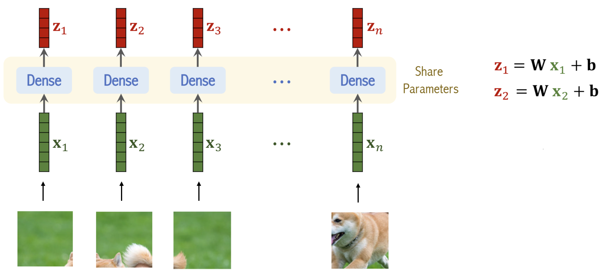
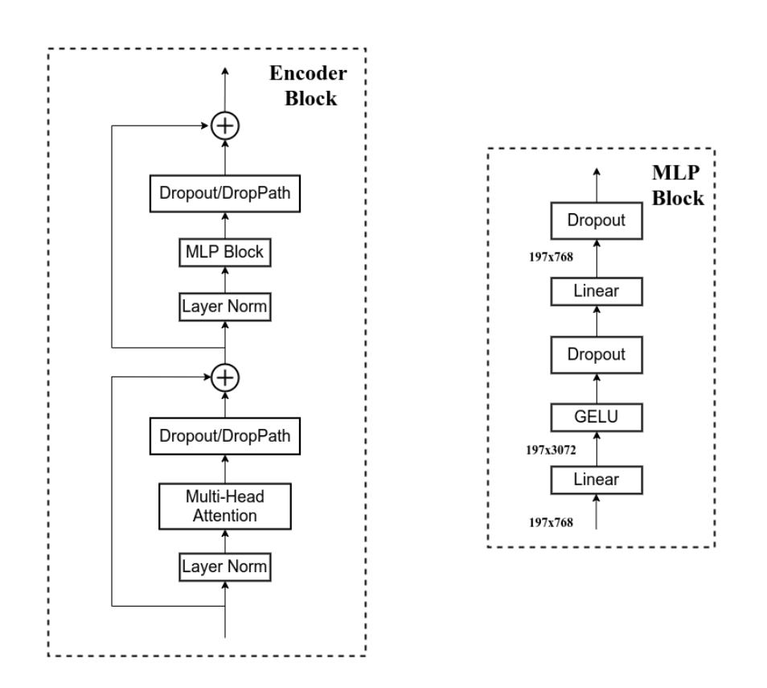
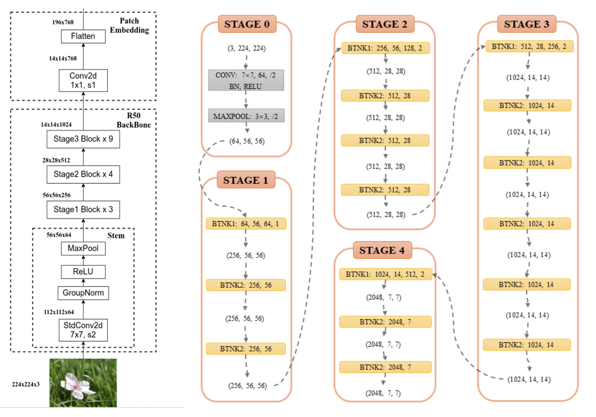

整体结构
分为三个部分，Linear Projection of Flattened Patches(Embedding层)、Encoder和MLP Head分类头

下图是不同版本ViT的参数设置。
- Layers：Transformer Encoder中重复堆叠Encoder Block的次数
- Hidden Size：通过Embedding层后每个token的dim
- MLP size：Transformer Encoder中MLP Block第一个全连接的节点个数（是Hidden Size的四倍）
- Heads：Transformer中Multi-Head Attention的heads数
Embedding层
首先将图片分为不同的patch，这里有两个参数
- patch size：一个patch的大小
- stride：步长，如果和patch size一样，则不重叠（可以重叠）
接着，将每个patch拉伸至一维，并通过线性层，得到Embedding层的输出
实际代码中，上述过程直接通过卷积进行。假设使用ViT-B16,参数设置如下
| kernel size | kernel num | stride |
|---|---|---|
| 16×16 | 768 | 16 |
- 原图尺寸[224,224,3]，卷积后➡[14,14,768]，将h和w进行展平➡[196,768]
- 加入[CLS]标签的token➡[197,768]
- 加入Position Embedding➡[197,768]
至此，得到Embedding层的输出
Encoder层
Encoder层结构如下，DropPath可以理解为随机丢弃一些残差连接。一个Transformer Encoder是由多个Encoder Block组成的
MLP Head
一般是直接Linear+Softmax。有些数据集比较大，会改成Linear+tanh+Linear+Softmax
Hybrid模型
改不同的backbone，先用backbone进行特征提取，然后将其输入至ViT中
参考资料: